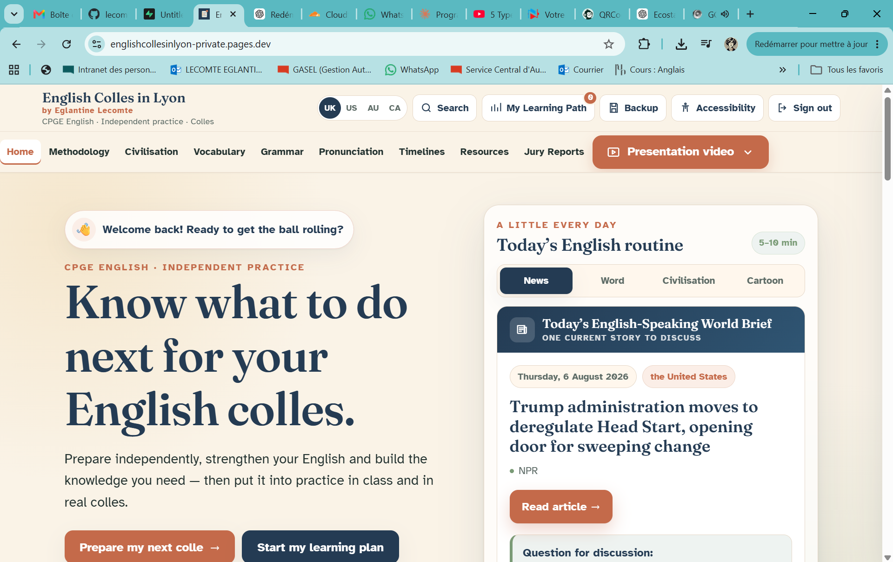

🧭
Methodology
Understand documents, contextualise, summarise, build a key question and organise your response.
Bring it to class: test your structure and reasoning orally.
A guided space for methodology, language, civilisation and regular practice between lessons.
The aim is not to replace English class. Prepare here, reuse what you have learnt in class, test it in your colles, then use feedback to decide what to work on next.
Access is personal and requests are reviewed before activation.
Independent work matters most when it feeds real interaction. The site is one part of a continuous learning loop.
The website is a training ground — not the finish line.
The presentation shows the main tools, how to find your way around the site and how independent work connects to class and colles.
Presentation video · English Colles in Lyon
Use diagnostics and guided routes instead of browsing at random.
Short tasks, quizzes, pronunciation work and oral preparation turn content into practice.
Ask questions, experiment with new language and reuse what you prepared when discussing documents.

The private homepage brings together daily practice, preparation routes, learning priorities and quick access to the main areas of the site.
Each area gives you something concrete to reuse aloud, discuss with a teacher or test in a real colle.
Understand documents, contextualise, summarise, build a key question and organise your response.
Bring it to class: test your structure and reasoning orally.
Explore countries, institutions, historical turning points and contemporary debates.
Bring it to class: use context to make your comments more precise.
Learn, hear, revise and practise useful vocabulary through lessons, flashcards and games.
Bring it to class: deliberately reuse new words when speaking.
Identify weak points and revise them through short lessons, quizzes and videos.
Bring it to class: notice the structures you use — and correct them.
Work on sounds, stress, rhythm, intonation and connected speech.
Bring it to class: practise intelligibility in real interaction.
Connect key events through chronological overviews, articles and videos.
Bring it to class: place documents in a wider historical context.
Use reliable resources and turn recurring examiner feedback into practical preparation.
Bring it to class: compare your work with actual expectations.
Use diagnostics, missions and review priorities to decide what to work on next.
Bring it to class: ask for help where your diagnostic shows a real need.
These three spaces support one another. None is designed to replace the others.
Prepare, discover, practise, identify weaknesses and build useful material.
Interact, ask questions, experiment, reuse language and learn from immediate feedback.
Apply strategies under real conditions, receive feedback and identify your next priorities.
You do not need to use everything at once.
Start with the homepage and the presentation video. Then choose one clear goal rather than opening every section.
Use the Guided Learning Plan and diagnostics to identify manageable priorities and work progressively.
Use methodology, relevant civilisation background, vocabulary and pronunciation work, then test your preparation aloud.
Use the daily routine for a short dose of news, vocabulary and civilisation, and reuse something from it in class.
Request personal access to use the complete activities, learning tools and resources. Already approved? Sign in directly.